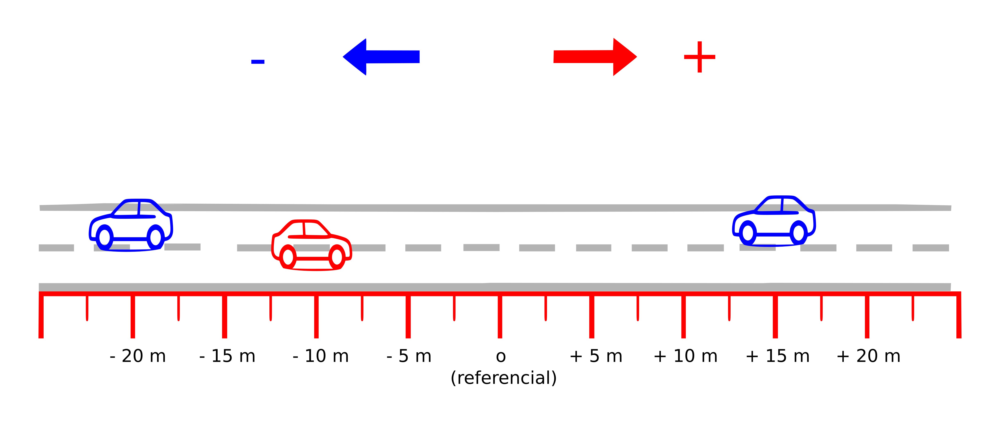

Física I
Mecânica
A mecânica estuda o movimento dos corpos e as forças que atuam sobre eles.
Cinemática
A Cinemática é o estudo do movimento dos corpos sem se preocupar com a análise das suas causas. Ela é importante para introduzir os conceitos básicos relacionados ao movimento como:
- Posição de um objeto
- Deslocamento
- Velocidade
Aceleração

Leis de Newton
As de Newton são a base para o estudo da mecânica, ela estabelece os princípios básicos para explicar como e por que os movimentos acontecem.
Mecânica dos Fluidos
A mecânica dos fluidos estuda o comportamento de líquidos e gases em repouso ou em movimento.
(Conteúdo a ser adicionado.)